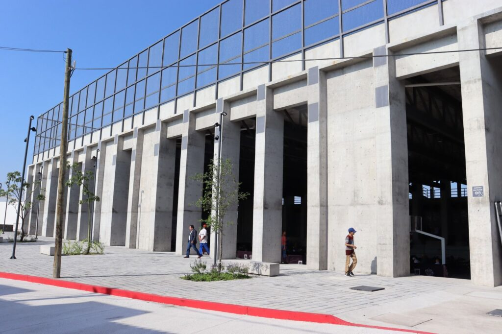
Espacio público comunitario construido por la SEDATU México. Ofrece un punto de encuentro para la activación física y la convivencia familiar.
Foto obtenida de irradianoticias
Servicios y Actividades:
- Canchas de fútbol y básquetbol
- Clases de deporte y activación física
- Gimnasio al aire libre
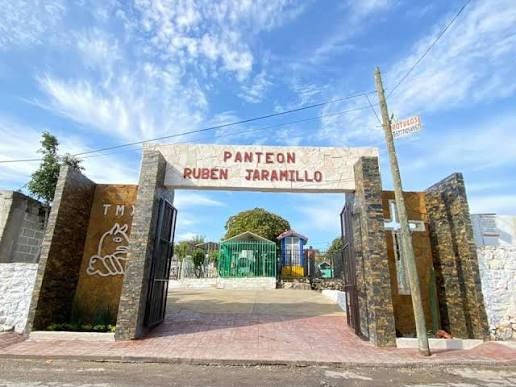
Camposanto de gestión comunitaria y ejidataria que da servicio a la población local en coordinación con los vecinos y autoridades.
Foto obtenida del municipio de Temixco
Ubicación y Salud:
- Cerca de la Parroquia Nuestra Señora de Guadalupe.
- Jornadas periódicas de limpieza, descacharrización y abatización.

Sucursal bancaria orientada a la atención de beneficiarios de programas sociales.
Foto obtenida del municipio de Temixco
Información de Atención:
- Atrás de las oficinas de Protección Civil.
- Lunes a Viernes de 9:00 a.m. a 4:30 p.m.
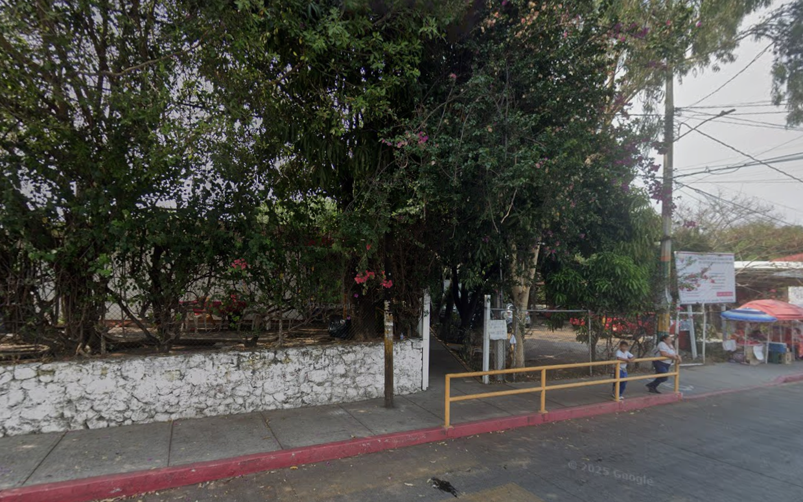
Centro de atención médica dedicada a la terapia y rehabilitación física para los miembros de la comunidad.
Detalles:
- Av. Salvador Allende, Col. Rubén Jaramillo, C.P. 62587.
- Lunes a Viernes de 8:00 a.m. a 4:00 p.m. Sábados y domingos cerrado.
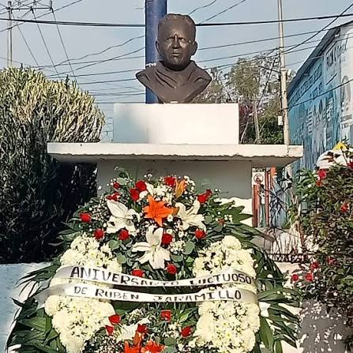
Punto de referencia vial con valor histórico, ligado a la fundación de la colonia en 1973 liderada por Florencio "El Güero" Medrano.
Ubicación:
- Calle Independencia #7, Col. Rubén Jaramillo, C.P. 62587.
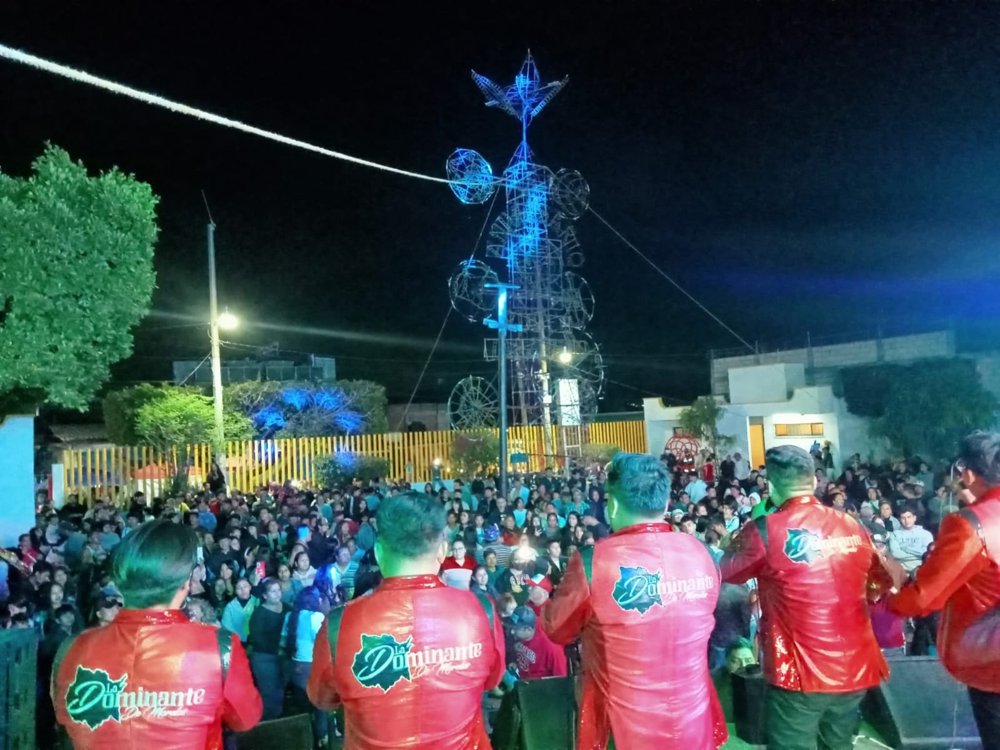
Oficina administrativa (delegación) a cargo de la delegada Karina Lisset Rosas Paulino.
Cuenta la ayudantía con juegos y cancha multiusos.
Sede:
- Esquina Mariano Matamoros y Niño Artillero S/N, C.P. 62587.
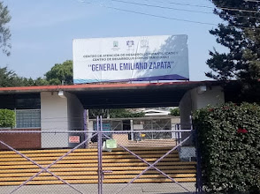
Espacio destinado a talleres, cursos y actividades de capacitación para las familias locales.
Servicios:
- Cadi (kínder)
- Biblioteca
- Escuela de belleza
Ubicación:
- Av. Salvador Allende #53D, Col. Rubén Jaramillo, C.P. 62587.
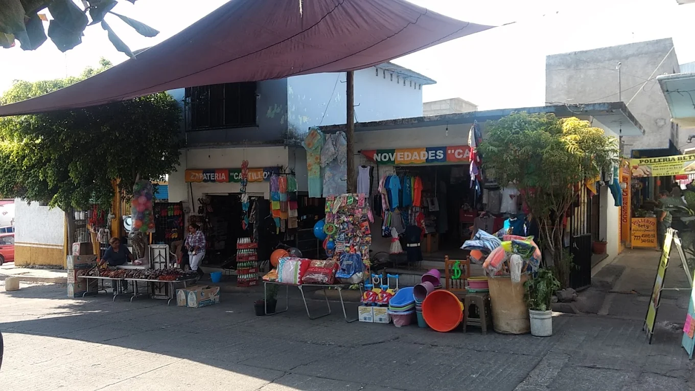
Centro de abasto popular conocido localmente como "Mercado Las Flores". El nombre proviene del proyecto original de fraccionamiento campestre de los años 70 sobre el que se fundó la colonia.
Ubicación y Horarios:
- Cerca de la calle Andrés Quintana Roo.
- Lunes a Domingo de 7:00 a.m. a 6:00 p.m.
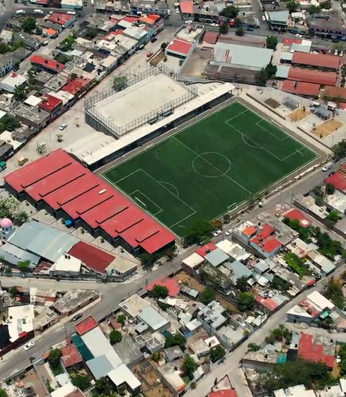
Moderno complejo comunitario construido por la SEDATU México para impulsar la economía y convivencia local.
Foto obtenida de Juanita Ocampo
Espacios del Complejo:
- Locales comerciales para apoyar el comercio local
- Áreas culturales
- Unidad deportiva integrada
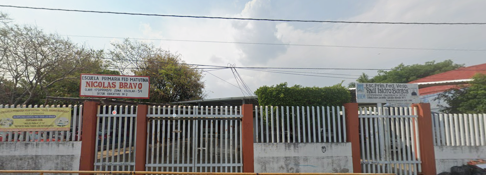
Foto obtenida de Google MapsInstitución educativa de nivel primaria que brinda servicio escolar a las niñas y niños de la comunidad en la colonia Rubén Jaramillo.
- Turno matutino: Nicolás Bravo
- Turno vespertino: Raúl Isidro Burgos
Ubicación y Sede:
- Calle Salvador Allende Num. Ext. 1, Col. Rubén Jaramillo, Temixco, Mor.
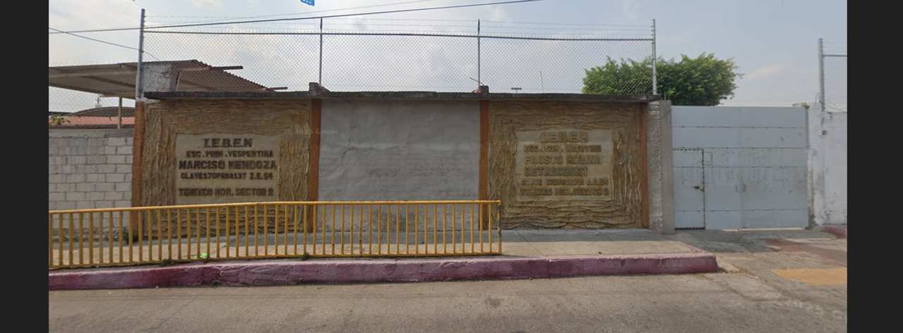
Foto obtenida de Google MapsInstitución educativa de nivel primaria que brinda servicio escolar a las niñas y niños de la comunidad en la colonia Rubén Jaramillo.
- Turno matutino: Fausto Molina Betancourt
- Turno vespertino: Narcizo Mendoza
Ubicación y Sede:
- Insurgentes 224, Rubén Jaramillo, 62587 Temixco, Mor.
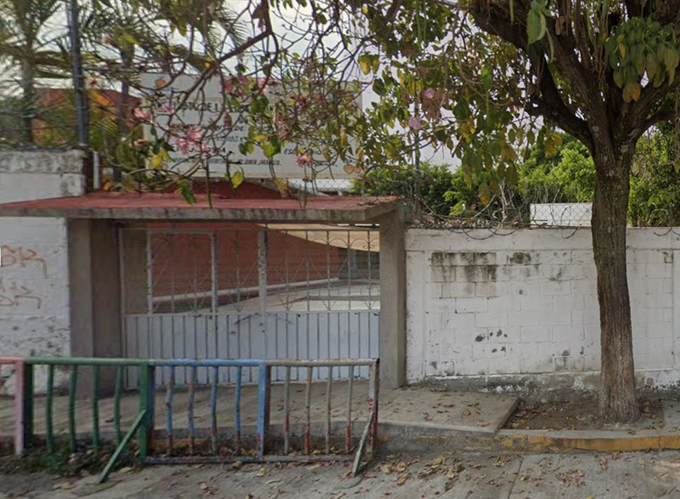
Foto obtenida de Google MapsInstitución educativa de nivel preescolar que brinda servicio escolar a las niñas y niños de la comunidad en la colonia Rubén Jaramillo.
- Turno matutino: Celia Muñoz Escobar
- Turno vespertino: Valentín Gómez Farcial
Ubicación y Sede:
- Conspiración de Querétaro, Rubén Jaramillo, 62587 Temixco, Mor.
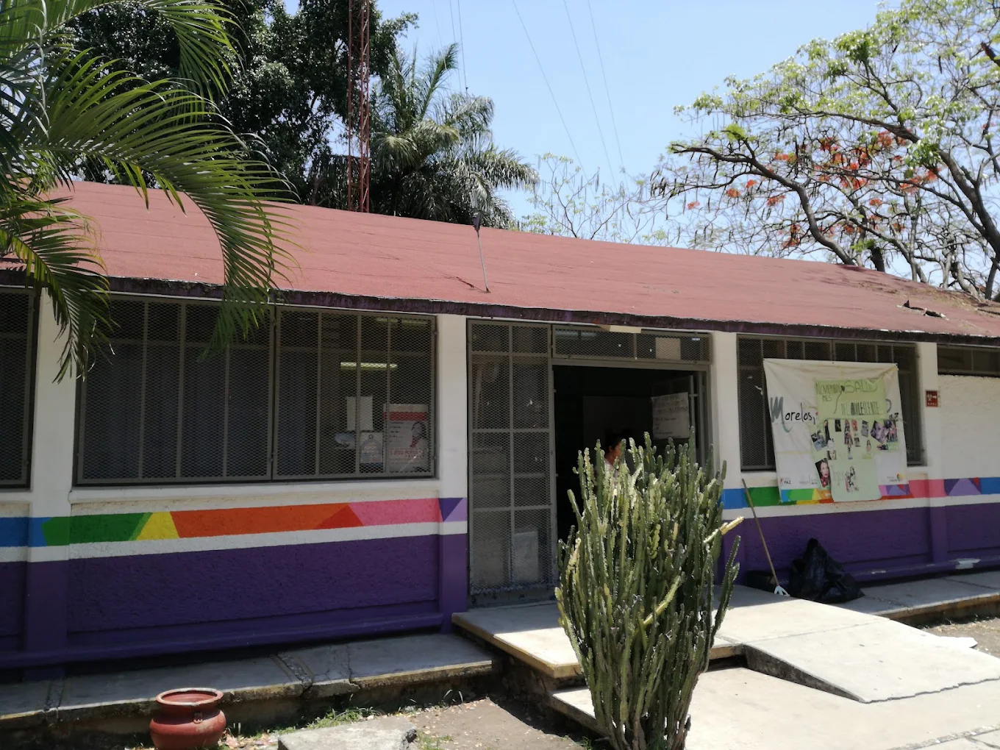
Foto obtenida de Google MapsUnidad de atención médica que brinda servicios de salud preventiva y consulta general a los residentes de la zona.
Ubicación y Horarios:
- Grito de Dolores, Rubén Jaramillo, 62587 Temixco, Mor.
- Lunes a Viernes de 8:00 a.m. a 3:30 p.m.
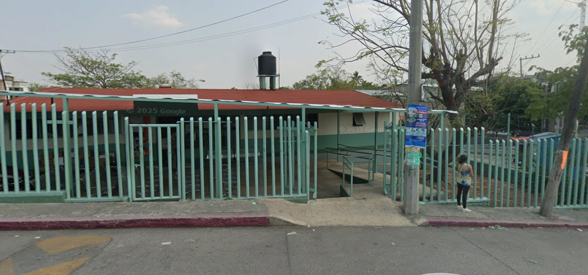
Foto obtenida de Google MapsMódulo de salud comunitario destinado a la atención médica básica y cuidado de la salud familiar.
Ubicación y Horarios:
- Insurgentes, Rubén Jaramillo, 62587 Temixco, Mor.
- Lunes a Viernes de 7:00 a.m. a 5:00 p.m.
- Sábados de 7:00 a.m. a 2:00 p.m.
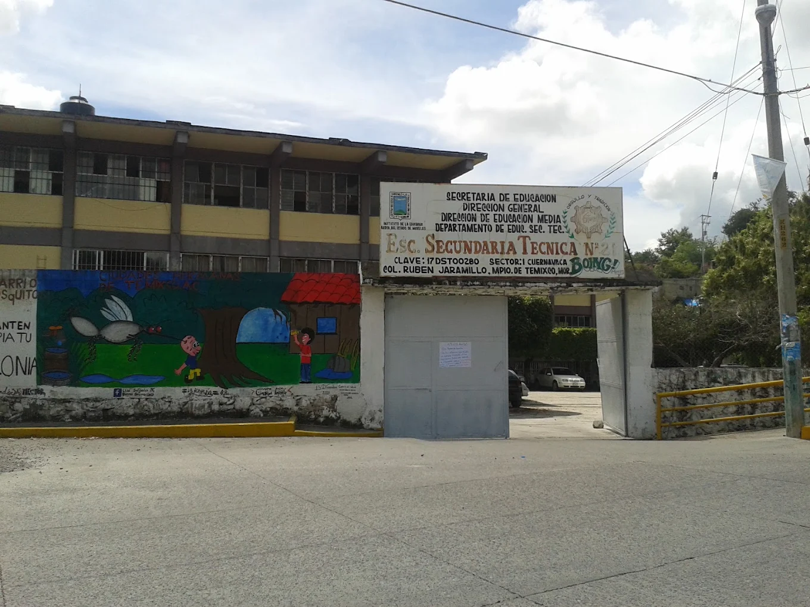
Foto obtenida de Google MapsInstitución educativa de nivel básico que brinda servicio escolar a las niñas y niños de la comunidad en la colonia Rubén Jaramillo.
Ubicación y Sede:
- Melchor Ocampo s/n, Col. Rubén Jaramillo, 62587 Temixco, Morelos.
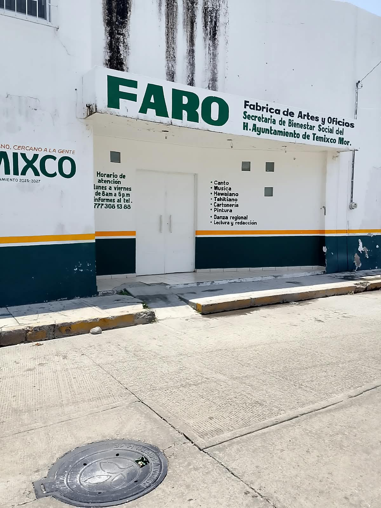
Foto obtenida de méritos propiosEste centro cultural comunitario ofrece de manera activa talleres y actividades artísticas para toda la familia.
Ubicación y Horarios:
- C. 20 de Noviembre, Rubén Jaramillo, 62587 Temixco, Mor.
- Lunes a Viernes de 8:00 a.m. a 6:00 p.m.
- Sábados y Domingos cerrado.
Instituto Nacional para la Educación de los Adultos. Ofrece inscripción a alfabetización, primaria y secundaria para adultos.
Ubicación y Horarios:
- Av. Salvador Allende, Rubén Jaramillo, 62587 Temixco, Mor.
- Lunes a Viernes de 8:00 a.m. a 1:00 p.m.
- Sábados y Domingos cerrado.